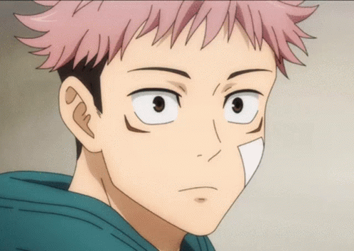
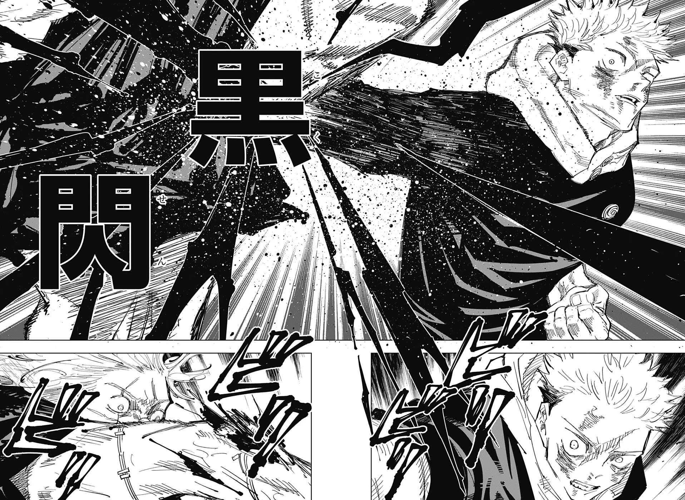
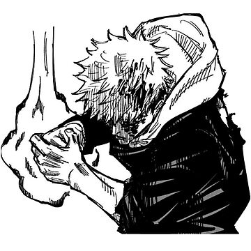
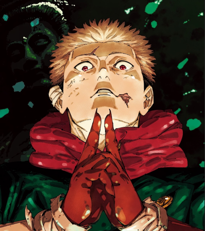
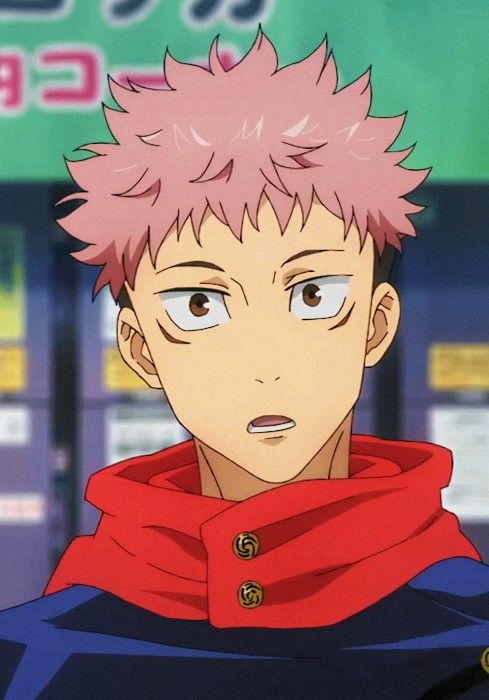
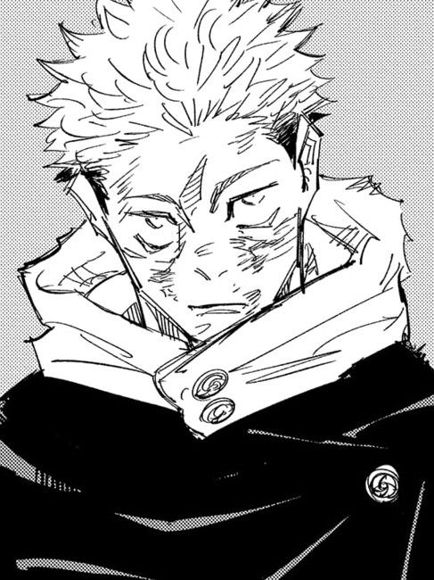
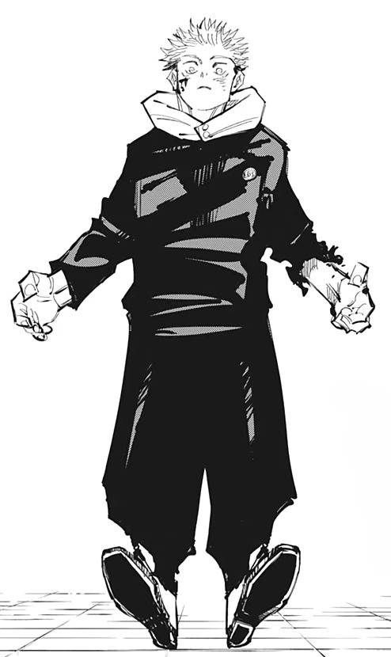
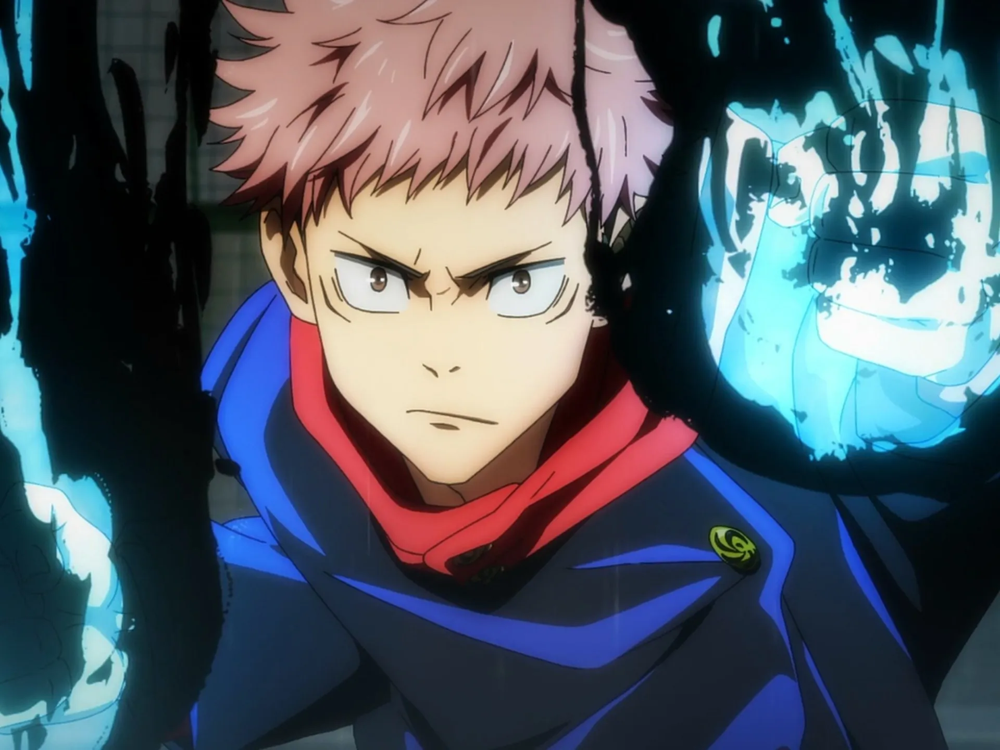
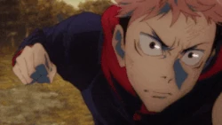

¿Quién es?
Yuji Itadori (虎杖悠仁 Itadori Yūji) es el protagonista principal de la serie manga Jujutsu Kaisen, la cual concluyó en septiembre de 2024. Originalmente un estudiante de secundaria con una fuerza física sobrehumana, su vida cambió drásticamente al ingerir un dedo maldito para salvar a sus amigos, convirtiéndose en el recipiente del Rey de las Maldiciones, Ryomen Sukuna.
A lo largo de la serie, Yuji entrenó como hechicero en el Colegio Técnico de Magia Metropolitana de Tokio bajo la tutela de Satoru Gojo. Aunque dejó de ser el recipiente principal de Sukuna durante los arcos finales, jugó un papel fundamental en la confrontación final, logrando derrotarlo definitivamente.
Tras la conclusión de la batalla, Yuji sobrevive y, junto a sus compañeros restantes, retoma su vida como hechicero, continuando con la misión de exorcizar maldiciones y seguir el legado de Gojo para mejorar la sociedad Jujutsu.
Apariencia

Itadori es un adolescente musculoso y alto (1,73 m y en crecimiento). Su cabello es puntiagudo, de color rosa pálido en el anime y marrón claro en el manga. Tras ser recipiente de Sukuna, desarrolló unas segundas líneas bajo sus ojos.
Después de la batalla contra Mahito y Choso en Shibuya, obtuvo dos cicatrices notables en la frente. Su vestimenta más característica es su uniforme modificado del Colegio Técnico: camisa oscura de manga larga sobre una sudadera con capucha roja, pantalones oscuros y zapatillas rojas.
En su tiempo libre, suele vestir ropa cómoda como sudaderas y pantalones oscuros.
Personalidad

Yuji es fundamentalmente honesto, amigable y valora profundamente la vida, guiado por el último deseo de su abuelo de ayudar a los demás y asegurarles una "muerte digna". Esto lo lleva a actos de gran sacrificio personal, como ingerir el dedo de Sukuna.
A lo largo de la historia, Yuji experimenta un inmenso trauma y carga con una gran culpa, especialmente después del Incidente de Shibuya y al presenciar las atrocidades cometidas por Sukuna mientras usaba su cuerpo. Esto lo vuelve más serio y deprimido por momentos.
A pesar del sufrimiento, Yuji demuestra una resiliencia increíble. Mantiene su determinación para luchar y proteger a sus amigos, madurando significativamente sin perder su núcleo compasivo.
Habilidades
Fuerza y Agilidad Sobrehumanas
Capacidades físicas innatas muy por encima de lo humano, incluso antes de aprender a usar energía maldita. Base de su estilo de combate cuerpo a cuerpo.
Maestría en Artes Marciales
Combatiente cuerpo a cuerpo excepcional, capaz de enfrentarse a maldiciones y hechiceros experimentados. Complementa su fuerza física innata.
Puño Divergente
Su golpe físico es seguido por un segundo impacto de energía maldita debido a un ligero desfase. Menos relevante a medida que mejora su control.
Destello Negro (Black Flash)
Amplifica el impacto (potencia ×2,5) aplicando energía maldita en 0,000001 segundos. Yuji lo ejecutó consecutivamente hasta 8 veces en la batalla final.

Percepción del Alma
Capaz de percibir el contorno del alma y dañarla directamente. Crucial contra Mahito y para separar el alma de Megumi de la de Sukuna.
Manipulación de Sangre
Adquirida tras ingerir los úteros malditos restantes (Pinturas de la muerte 4-9). Usada para ataques como Manipulacion de la sangre y curación/regeneración acelerada.
Técnica Maldita Inversa
Aprendida durante el timeskip. Permite curar heridas usando energía positiva. Esencial para sobrevivir combates de alta intensidad.
Dominio Simple
Técnica defensiva que neutraliza técnicas malditas y ataques de dominio en un área reducida. Aprendida durante el timeskip previo a la batalla final.
Santuario (Shrine)
Despertó la técnica maldita de Sukuna grabada en su alma. Combina cortes con daño al alma, creando "desmantelamientos que dividen el alma". Clave en la derrota de Sukuna.

Expansión de Dominio
Manifestada brevemente al final de la lucha contra Sukuna. Sus mecánicas exactas no fueron completamente exploradas en el manga.

Resistencia a Venenos y Maldiciones
Desarrollada por ser el recipiente de Sukuna. Factor de supervivencia importante a lo largo de toda la serie.
Imágenes de Itadori






Curiosidades
Altura
1,73 m
Cumpleaños
20 mar
Fin del manga
Cap. 271
- ▸ El manga de Jujutsu Kaisen finalizó en septiembre de 2024 con el capítulo 271.
- ▸ Adquirió la técnica de Manipulación de Sangre tras ingerir los úteros malditos 4-9.
- ▸ Despertó la técnica maldita "Santuario" de Sukuna durante la batalla final.
- ▸ Es excepcionalmente bueno ejecutando Destellos Negros: récord de 8 consecutivos.
- ▸ Las cicatrices en su frente son resultado de sus combates en Shibuya contra Choso y Mahito.
- ▸ Sobrevivió a los eventos finales del manga y continúa su vida como hechicero.
- ▸ Su tipo de chica preferido es "alta con un gran trasero", mencionando a Jennifer Lawrence.
- ▸ Si no hubiera sido hechicero, probablemente habría sido bombero.
- ▸ Se confirmó que su madre estaba poseída por Kenjaku en el momento de su concepción.
Última actualización de esta página: